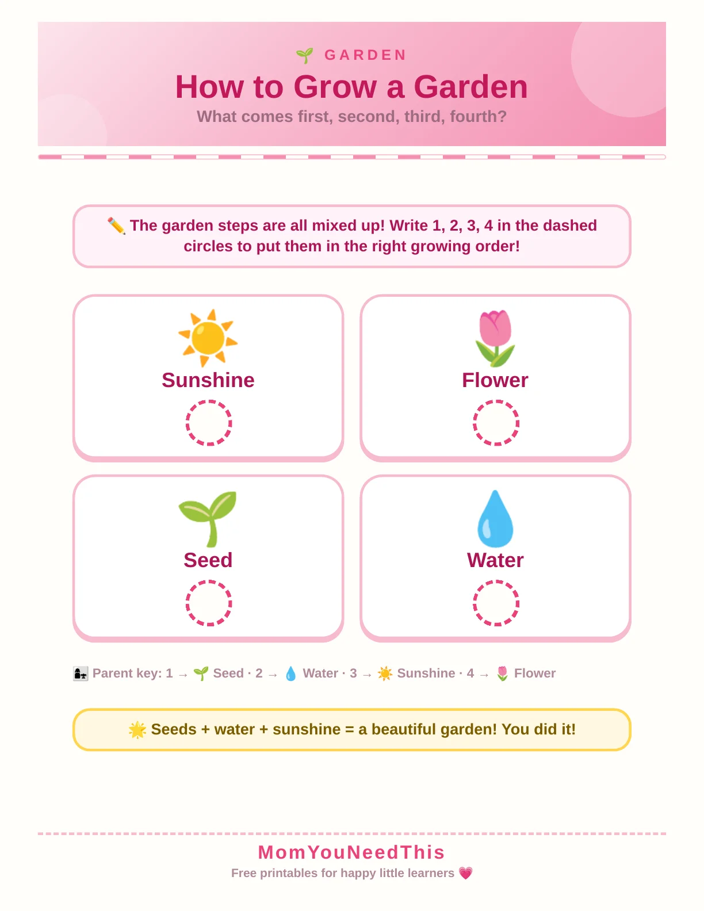

🥕🌱 Gardening Activities Little Hands, Big Gardens
Dig, plant, water, wait — gardening teaches patience and wonder. These activities bring the joy of growing things to toddlers and preschoolers, no backyard required.
Quick Answer
This free printable gardening activity teaches toddlers and preschoolers (ages 2–5) what a plant needs to grow — soil, water, sunlight and time — through the five steps of planting a seed: dig, plant, water, wait, and watch it sprout. Kids sequence the growing steps, learn what plants need, and start a mini garden journal to record a real seed's progress. Download and print at home with no signup needed.
At a Glance
- Ages: Toddlers and preschoolers (ages 2–5)
- Activity: Sequencing the steps of planting a seed; a mini garden journal
- Skills: Plant needs and sequencing
- Format: Printable worksheet (PDF)
- Cost: Free, no signup
Gardening is the slowest activity on this site and possibly the most valuable: it is the one that cannot be hurried. A seed grows on its own schedule, and a child tending one learns patience with a payoff — the day the green hook of a sprout breaks the soil is a day most children remember for years.
🥕🌱 Explore Gardening Activities
Learn what plants need, sequence the steps of planting a seed, and start a mini garden journal.
💡 How To Use This Activity
Print the gardening pages alongside a real seed if you have one — even a bean in a damp paper towel. Sequence the growing steps on paper first, then check your real sprout each day and let your child report how today's plant compares with the pictures. The print button opens the full-size page in a new tab if you prefer to print from there.

🖨️ Download Your Free Gardening Activities Printable
Learn what plants need, sequence the steps of planting a seed, and start a mini garden journal. Print it out, grab the crayons, and you're ready — no signup needed.
⬇️ Download Free Printable 🖨️ Print🎁 Free printable for toddlers & preschoolers
🌱 From Seed To Sprout — The Five Steps
1. Dig. Seeds need a bed of soil — loose, dark, and slightly damp. In a pot, your child's job is filling and patting; in the ground, it is breaking the clumps. Gardeners call good soil the plant's pantry and mattress in one.
2. Plant. A seed goes about as deep as it is big, times two — a bean gets a proper hole, a tiny lettuce seed barely a dusting of soil. Inside every seed is a baby plant packed with its own starter food, which is why seeds can sprout even in a damp paper towel.
3. Water. Water wakes the seed up. It softens the coat, the root pushes down, and the shoot pushes up — in that order, roots before shoots, always. Soil should stay damp like a wrung-out sponge, never flooded.
4. Wait. The hardest step, and the one this activity exists to teach. Beans take about a week to show; some seeds take three. The garden journal on this page turns waiting into watching — a drawing every few days is a record that time passed and something changed.
5. Sprout and grow. First come two small starter leaves, then true leaves, then the race for the light. From here the plant needs the same three gifts forever: water, light, and someone paying attention.
❓ Gardening Activities FAQs
What activities are included in Gardening Activities?
This page collects our free gardening printables in one place: what plants need to grow, sequencing the five steps of planting a seed (dig, plant, water, wait, sprout), and a mini garden journal for tracking a real plant. Download the printable below and start learning right away.
Are these activities really free?
Yes — every printable on MomYouNeedThis is 100% free to download and print. No signup, no payment, just tap the download button. A bean seed and a damp paper towel are the only supplies the real-garden half of this activity needs. A bean seed and a damp paper towel are the only supplies the real-garden half of this activity needs.
How do I use these activities with my child?
Pair the pages with a real seed — even a bean in a damp paper towel inside a jar. Sequence the growing steps on paper first, then check your real sprout each day and let your child report how today's plant compares with the pictures, drawing it in the journal. Beans show in about a week, which keeps the faith.